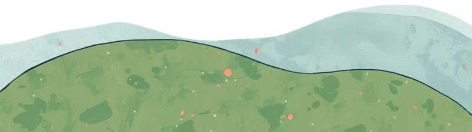

おしらせ
ぼんぼやーじゅ通信
子連れで入りやすい
カフェも載せます。
アンケートへのご回答、ありがとうございました。いただいた声から、変えたことです。
- 1今週「知りたいお店」でいちばん多かった子連れカフェを、まず7軒花小金井・鈴木町・田無・小金井・東久留米
- 2SNSでしか分からないお祭りや
マルシェも、確かめて載せています
- 3「シンプルがいい」の声のとおり、LINEは短いまま。くわしくは年齢別のページで
ご存じのカフェがあれば、このトークで教えてください。
↓このあとのリンクから、どうぞ
ページはこんな感じ（今週号）
